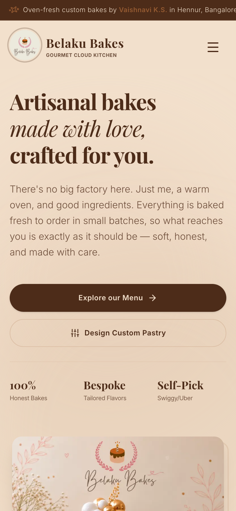

Belaku Bakes
Bakery Website Design & Development
Octagram designed and developed the digital experience for Belaku Bakes—an artisanal cloud kitchen in Hennur, Bangalore. We created an inviting, brand-focused bakery website that showcases handcrafted cakes, fudgy brownies, cookies, and savory bakes while establishing a seamless customer order journey.

The Business & The Digital Challenge
Transforming a boutique artisanal cloud kitchen into a polished digital storefront that reflects culinary craftsmanship.
Project Overview
Belaku Bakes operates as an artisanal cloud kitchen based in Hennur, Bangalore. They handcraft small-batch celebration cakes, fudgy chocolate brownies, Basque burnt cheesecakes, artisanal cookies, and savory pastries made strictly fresh to order.
The business needed a dedicated digital home that moved beyond informal social media inquiries to provide an authoritative, beautiful product catalog and clear ordering guidelines for local customers.
The Design & User Challenge
Food business website design requires appetizing visual hierarchy while maintaining fast loading speeds on mobile networks.
- Showcase diverse bakery categories (cakes, brownies, cookies, savory bakes) with clear dietary indicators.
- Bridge customer discovery into a direct WhatsApp ordering conversation without cumbersome account creation.
- Provide clarity on local delivery radiuses, advance booking timelines, and custom cake options in Hennur, Bangalore.
What Octagram Built for Belaku Bakes
A lightweight, visual-first web platform tailored to culinary presentation and high-converting customer inquiries.
Custom Bakery Visual Direction
Developed a warm, artisanal color palette with refined typography that reflects the handcrafted nature of the bakery's offerings.
Structured Product Presentation
Categorized menu sections for Signature Fudgy Brownies, Basque Cheesecakes, Custom Celebration Cakes, and Savory Bakes with clear descriptions.
Direct WhatsApp Order Journey
Integrated customized WhatsApp action buttons allowing customers to initiate instant orders with pre-filled item inquiries.
Responsive Touch Experience
Designed mobile-first navigation ensuring quick browsing, smooth scroll interactions, and clear order buttons on smartphones.
Hennur & Bangalore Localization
Structured local geographical metadata, pickup instructions, and delivery area clarity to help local Bangalore food lovers discover the bakery.
Fast & Lightweight Delivery
Engineered with optimized asset delivery and zero unnecessary code overhead for instant load times on 4G/5G mobile connections.
Mobile-First Bakery Experience
Because the majority of bakery and food ordering occurs on smartphones, the mobile interface was crafted with large tap targets and friction-free product exploration.

Project Technical & Information Architecture
Detailed specifications of the deliverables built and deployed for Belaku Bakes.
| Deliverable Area | Implementation Detail | Business Value |
|---|---|---|
| Brand & UI Design | Warm artisanal theme, modern typography, high-contrast product cards | Creates a premium bakery visual presence |
| Menu Organization | Brownies, Cheesecakes, Celebration Cakes, Cookies, Savory Bakes | Enables quick product discovery for buyers |
| Order Funnel | Direct WhatsApp API trigger with pre-populated order context | Removes checkout barriers and speeds up conversions |
| Local Search Relevance | Hennur, Bangalore localized content structure and metadata | Strengthens topical relevance for local bakery discovery |
| Responsive Performance | Zero horizontal overflow, adaptive images, clean CSS execution | Seamless experience across desktop and mobile devices |
Experience Belaku Bakes in Action
Visit the live, deployed website to see the custom bakery design, menu layouts, and responsive order flow in real-time.
Visit Live Website (belakubakes.com) ↗Explore More of Octagram's Work
See how Octagram builds specialized digital platforms across different industries.

Ranka Chemical
Chemical Supplier Website & Digital Catalogue with 5,000+ SKUs, RFQ quote builder, and COA/MSDS batch traceability.
View Case Study →
Petals Suites & Hotel
Hotel Website Design & Booking Experience opposite Manyata Tech Park with room showcases and instant WhatsApp reservation funnel.
View Case Study →Have a business that deserves a better digital presence?
We design, build, host and manage modern websites that help your business look better, work better, and grow.
Start a Project with Octagram →